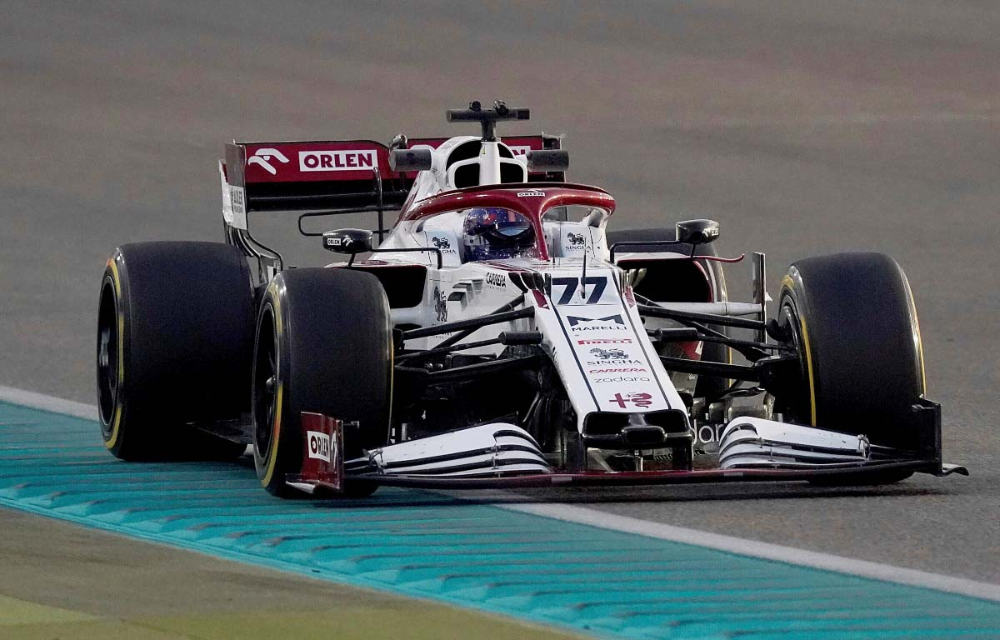

Valtteri Viktor Bottas è nato a Nastola il 28 agosto 1989, è un pilota automobilistico finlandese, attivo in Formula 1 con l'Alfa Romeo. Ha debuttato in Formula 1 nel 2013 con la Williams ed è passato nel 2017 alla Mercedes, con la quale è stato vicecampione del mondo nel 2019 e 2020. Dal 2022 è un pilota dell'Alfa Romeo. È soprannominato Woodman ("Il boscaiolo") per via delle sue origini nordiche. Il suo numero di gara è il 77. Bottas ha un debutto difficile in Formula 1, in gran parte a causa della scarsa competitività della sua FW35. Nelle prime gare della stagione il pilota finlandese riesce sempre a giungere al traguardo, reggendo il confronto con il più esperto compagno di squadra, ma rimanendo sempre confinato nella seconda metà del gruppo. Si mette in luce nelle qualifiche del Gran Premio del Canada, disputate su pista bagnata: il finlandese riesce a entrare per la prima volta nel gruppo dei primi dieci, cogliendo un sorprendente terzo posto. La gara viene, però, disputata in condizioni di asciutto, nelle quali la vettura si dimostra ancora una volta poco competitiva, e Bottas taglia il traguardo addirittura quattordicesimo, fuori dalla zona punti. Nel prosieguo della stagione il pilota finlandese continua a giungere al traguardo fuori dalla zona punti, con l'eccezione di un ritiro per problemi meccanici nel Gran Premio d'Ungheria. Conquista i primi punti in carriera solo nella penultima gara del campionato, il Gran Premio degli Stati Uniti, nel quale giunge ottavo al traguardo dopo essere scattato dalla nona posizione. Bottas chiude quindi il campionato in diciassettesima posizione, con quattro punti La stagione seguente inizia in modo migliore, con la nuova Williams FW36 motorizzata Mercedes che si rivela nettamente più competitiva della vettura precedente. Nel Gran Premio d'apertura Bottas conquista il suo miglior risultato in carriera, tagliando il traguardo in sesta posizione e venendo poi promosso al quinto posto per la squalifica di Daniel Ricciardo. Il pilota finlandese coglie punti anche nelle tre gare seguenti, ottenendo un settimo e due ottavi posti. Ripete poi il suo miglior piazzamento in Spagna, dove giunge quinto. A Monaco invece è costretto al ritiro Nel Gran Premio di Russia Bottas ottiene il quinto podio stagionale, facendo anche segnare il primo giro veloce in carriera. Dopo due piazzamenti a punti negli Stati Uniti e in Brasile, Bottas chiude la stagione con un altro podio, tagliando il traguardo al terzo posto nel Gran Premio di Abu Dhabi. Il pilota finlandese si piazza al quarto posto nella classifica generale, con 186 punti.  Bottas apre la sua quarta stagione consecutiva in Williams con una serie di cinque piazzamenti a punti, con un quarto posto nel Gran Premio di Russia (dove è partito dalla prima fila al fianco del poleman Nico Rosberg) come miglior risultato. La serie si interrompe nel Gran Premio di Monaco, nel quale il pilota finlandese giunge dodicesimo al traguardo dopo essere scattato dalla decima posizione in griglia di partenza. Nel successivo Gran Premio del Canada Bottas conquista il primo podio stagionale, chiudendo al terzo posto sotto la bandiera a scacchi, alle spalle di Lewis Hamilton e Sebastian Vettel. Nelle gare seguenti il pilota finlandese giunge quasi sempre in zona punti, con un quinto posto nel Gran Premio della Malesia come miglior piazzamento. La minore competitività della monoposto nella seconda fase della stagione gli impedisce, però, di lottare per il podio. Bottas chiude l'anno in ottava posizione assoluta, con 85 punti. Il 16 gennaio 2017 Valtteri Bottas viene ufficialmente annunciato come pilota Mercedes per sostituire il ritirato, campione in carica, Nico Rosberg, affiancando il 3 volte campione del mondo Lewis Hamilton. Nella gara d'apertura, a Melbourne, Bottas parte in seconda fila e conclude la gara al terzo posto, alle spalle di Sebastian Vettel e Lewis Hamilton. Nel successivo Gran Premio di Cina il pilota finlandese, autore di un testacoda, non ripete il risultato, chiudendo in sesta posizione. In Bahrein Bottas ottiene la prima pole position della carriera, battendo di appena 23 millesimi di secondo il suo compagno di squadra. A Montecarlo la Mercedes si dimostra meno competitiva della Ferrari; Bottas, qualificatosi terzo, taglia il traguardo in quarta posizione, scavalcato da Daniel Ricciardo durante i cambi gomme. Nelle gare seguenti, a Montréal e Baku, il confronto tra le due scuderie torna ad essere equilibrato e Bottas ottiene due secondi posti. Nella seconda occasione il pilota finlandese, scivolato in ultima posizione dopo un contatto con Räikkönen alla prima curva, si rende protagonista di una rimonta conclusa con il sorpasso sul debuttante Lance Stroll sul rettilineo d'arrivo. Nel seguente Gran Premio d'Austria Bottas conquista la seconda vittoria stagionale, dopo essere scattato dalla pole position. Una settimana più tardi, a Silverstone, il pilota finlandese viene arretrato di cinque posizioni sulla griglia di partenza per aver sostituito il cambio: in gara Bottas rimonta fino al secondo posto, approfittando anche della foratura subita da Räikkönen nelle ultime fasi del Gran Premio. In Ungheria Bottas, obbedendo a un ordine di scuderia, cede il terzo posto al compagno di squadra Hamilton, in quel momento più veloce, in modo da permettergli di attaccare il ferrarista Räikkönen. Non essendo riuscita la manovra, il pilota finlandese si vede restituire la terza posizione all'ultima curva, potendo così salire sul podio. Dopo un quinto posto nel Gran Premio del Belgio, Bottas torna a podio a Monza, dove chiuse secondo alle spalle del compagno di squadra. Anche a Singapore Bottas conquista il podio, giungendo terzo anche in virtù del ritiro dei due piloti della Ferrari e di Max Verstappen, che gli partivano davanti, per un incidente alla prima curva. Il Gran Premio della Malesia è più difficile per Bottas, che si qualifica in quinta posizione con un pesante distacco dal compagno di squadra, in pole position, e taglia il traguardo nella stessa posizione, staccato di quasi un minuto dal vincitore Verstappen. Bottas chiude fuori dal podio anche nel successivo Gran Premio del Giappone, nel quale conquista il quarto posto. Il contemporaneo ritiro di Vettel porta, però, il pilota finlandese ad appena tredici punti di distacco dal pilota tedesco, in seconda posizione nella classifica generale. Il confronto tra i due si decide, di fatto, alla penultima gara della stagione, in Brasile: Bottas, partito dalla pole position, viene superato dal rivale in partenza, chiudendo la gara alle sue spalle. Nel Gran Premio di chiusura, ad Abu Dhabi, Bottas conquista la terza vittoria in carriera, arricchita da pole position e giro più veloce. Il pilota finlandese chiude la stagione in terza posizione assoluta, con 305 punti. Confermato dalla Mercedes, Bottas apre il 2018 in maniera negativa: nell'inaugurale Gran Premio d'Australia il pilota finlandese finisce contro le barriere nell'ultima fase delle qualifiche, venendo relegato al quindicesimo posto in griglia di partenza per via della sostituzione del cambio resasi necessaria sulla sua Mercedes. In gara Bottas rimonta solo parzialmente, risalendo fino all'ottavo posto finale. Bottas chiude la stagione al quinto posto in classifica piloti. La stagione di Bottas comincia con la vittoria del Gran Premio d'Australia, dominato dal primo all'ultimo giro, a seguito del sorpasso effettuato su Hamilton in partenza. Con la conquista del giro veloce, inoltre, diventa il primo pilota ad usufruire del punto aggiuntivo introdotto a partire da questa stagione, ottenendo 26 punti totali. Nel weekend del Gran Premio del Bahrein non riesce a battere Hamilton, qualificandosi in quarta posizione dietro al compagno, qualificatosi in terza; lo sorpassa nei primi giri guadagnando anche la seconda posizione, ma in seguito commette un errore e torna alle sue spalle. A fine gara finisce al secondo posto grazie a un guasto alla power unit di Charles Leclerc, che era avviato a vincere la gara. Dopo uno sfortunato ritiro in Brasile dovuto a un guasto al motore, ottiene un quarto posto ad Abu Dhabi partendo dalla ultima posizione, e chiude così il mondiale in seconda posizione, il suo miglior risultato in carriera. Nel 2021 Bottas conclude la sua esperienza in Mercedes con un sesto posto al Gran Premio di Abu Dhabi. Il giorno dopo debutta con l'Alfa Romeo in occasione dei test post-stagionali, dove conduce i test per le gomme della stagione 2022 a bordo di una versione modificata dell'Alfa Romeo Racing C38.